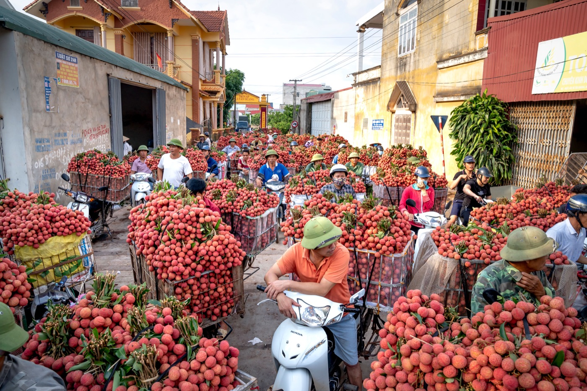

베트남 더위 속 오토바이 타는 법

달리는 중에는 더위가 덜 느껴져 탈수를 너무 늦게 알아채기 쉽습니다. 햇볕, 도로에서 올라오는 열기, 꽉 끼는 헬멧이 집중력을 떨어뜨립니다. 안전한 주행은 에어컨에 빨리 도착하려는 게 아니라 시간, 물, 경로를 고르는 데서 시작합니다.
시간과 경로 고르기
장거리는 아침이나 늦은 오후에 계획하기 좋습니다. 한낮에는 물을 보충할 수 있는 휴식처, 주유소, 가게가 분명한 경로를 고르세요. 빡빡하게 계획하지 마세요: 더위는 속도를 늦추고 추가 휴식이 필요합니다.
더운 날의 옷차림
맨살은 빨리 타고 넘어질 때 보호도 안 됩니다. 밝은 색 가벼운 긴소매, 막힌 신발, 장갑, 통풍되는 정상 헬멧이 좋습니다. 선글라스는 잘 고정되고 시야를 왜곡하지 않아야 하며, 어두운 바이저는 해가 진 뒤에 쓰면 안 됩니다.

물과 휴식
심한 갈증이 오기 전에 조금씩 자주 마시세요. 장거리라면 물과 전해질 보충제가 유용하지만 일반 물과 휴식을 대신하지 않습니다. 그늘에 멈추고 헬멧을 벗고 몸을 식히세요. 주행 전 음주는 안전한 조작과 양립할 수 없고 탈수를 악화시킵니다.
멈춰야 할 신호
- 두통, 메스꺼움, 갑작스러운 무기력;
- 어지러움과 반응 저하;
- 경련, 혼란스러운 생각, 이상한 졸음;
- 미러와 도로 표지판을 제대로 못 봄;
- 무슨 수를 써서라도 “빨리 도착하고 싶다”는 느낌.
안전한 곳에 멈추고, 시원한 곳으로 가고, 물을 조금씩 마시고, 도움을 청하세요. 의식 혼란, 실신, 급격한 악화가 있으면 응급 치료가 필요하며 주행을 계속하면 안 됩니다.
오토바이에 생기는 일
출발 전 차가운 바퀴에서 제조사 권장대로 공기압을 확인하세요. 달린 뒤 수치가 올랐다고 뜨거운 타이어에서 바람을 빼지 마세요. 계기판 경고, 연료 냄새, 이상한 소리, 출력 저하에 주의하세요. 뜨거운 장치를 열거나 배기구를 만지지 마세요.
휴대폰과 소지품
직사광선 아래 스마트폰은 과열되어 내비게이션이 꺼질 수 있습니다. 물이나 얼음으로 급하게 식히지 말고 그늘에서 자연스럽게 식히세요. 닫힌 수납함에 스프레이, 라이터, 민감한 전자기기를 두지 마세요. 서류와 물은 짐이 핸들을 방해하지 않게 보관하세요.
햇볕 아래 주차한 뒤
시트와 금속 부품이 매우 뜨거워집니다. 출발 전 배기구는 만지지 말고 조심히 손으로 확인하세요. 수납함을 조심히 열고 헬멧을 환기하세요. 더위 뒤 처음 몇 분은 차분히 달리세요: 집중력은 바로 돌아오지 않습니다.
짧은 결론
더위 속에서는 가장 빠른 사람이 아니라 물, 그늘, 휴식을 계획한 사람이 이깁니다. 가볍게 몸을 가리는 옷, 정상 헬멧, 차분한 경로가 주의력을 지켜줍니다. 내비게이션은 오토바이에서 휴대폰 쓰기 글을 참고하고, 출발 전에는 2분 점검을 하세요.